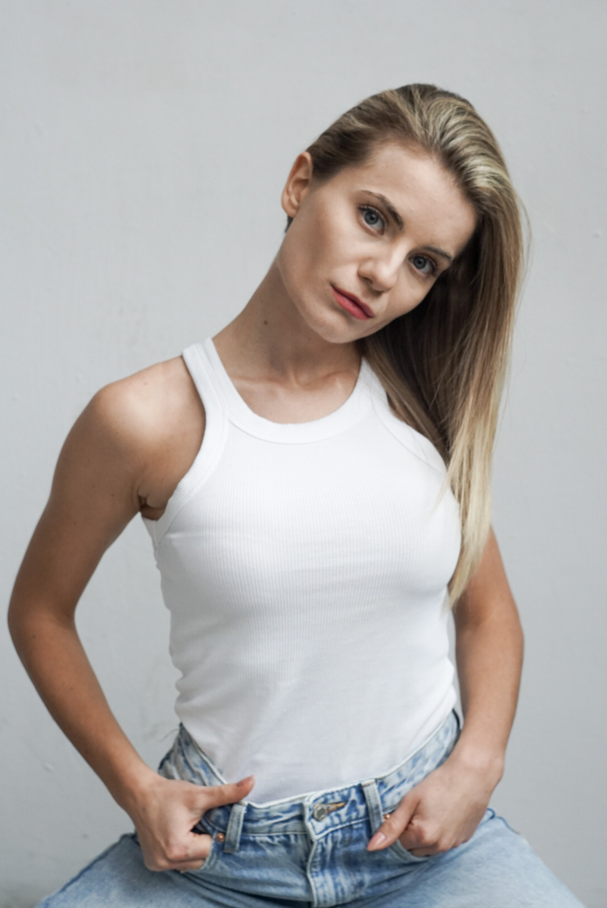

O mnie słów kilka...
Nazywam się Marlena Burian. Ukończyłam Lart Studio w Krakowie, które ukształtowało moją drogę aktorską, dając mi solidne podstawy do rozwijania się na scenie i przed kamerą. Mój rozwój nie kończył się jednak na studiach – uczestniczyłam również w warsztatach aktorskich pod okiem Beaty Fudalej, Doroty Zięciowskiej oraz Agnieszki Pilaszewskiej. To właśnie dzięki tym mistrzom mogłam udoskonalić swoje umiejętności, co owocuje każdym kolejnym projektem. Moje doświadczenie filmowe rozpoczęło się w 2014 roku od głównej roli w filmie fabularnym „Karolina” w reżyserii Dariusza Reguckiego. Jednak szeroką rozpoznawalność przyniosła mi rola Mirelli w serialu „Rodzinny interes”, w którym grałam od 2017 do 2023 roku. W międzyczasie miałam także przyjemność występować w wielu innych popularnych produkcjach telewizyjnych, takich jak „Na sygnale”, „Ojciec Mateusz”, „Osiecka” czy „Barwy szczęścia”. Moją prawdziwą pasją jest teatr. W latach 2014–2016 współpracowałam z Teatrem Trzcina, gdzie zagrałam monodram „Wyznanie”. Obecnie jestem związana z Teatrem Bajaderka, w którym występuję w spektaklach dla dzieci, łącząc aktorstwo z wokalem.
Obecnie pracuję nad...
Rozwinięty opis zdjęcia opowiadający o tym co dokładnie się na nim dzieje.
Rozwinięty opis zdjęcia opowiadający o tym co dokładnie się na nim dzieje.
Rozwinięty opis zdjęcia opowiadający o tym co dokładnie się na nim dzieje.
Bio
Monodram „Wyznanie” w reżyserii Kariny Góry był dla mnie wyjątkową podróżą artystyczną, która spotkała się z niezwykłym uznaniem na wielu festiwalach. Spektakl przyniósł mi Nagrodę Aktorską na VI Przeglądzie Teatrów Amatorskich SPOT w Warszawie, a także Wyróżnienie Aktorskie podczas VI Będzińskich Spotkań Aktorskich BEST 2013. Na 14. Ogólnopolskim Festiwalu Ewentualnych Talentów Aktorskich FeTA 2013 otrzymałam kolejną Nagrodę Aktorską.Ukoronowaniem tej artystycznej drogi było zdobycie I Nagrody na 5. Ogólnopolskich Spotkaniach Jednego Aktora „Monodram” w 2013 roku.
Galeria
Zdjęcia!
Współpraca
Telefoniści jebani!